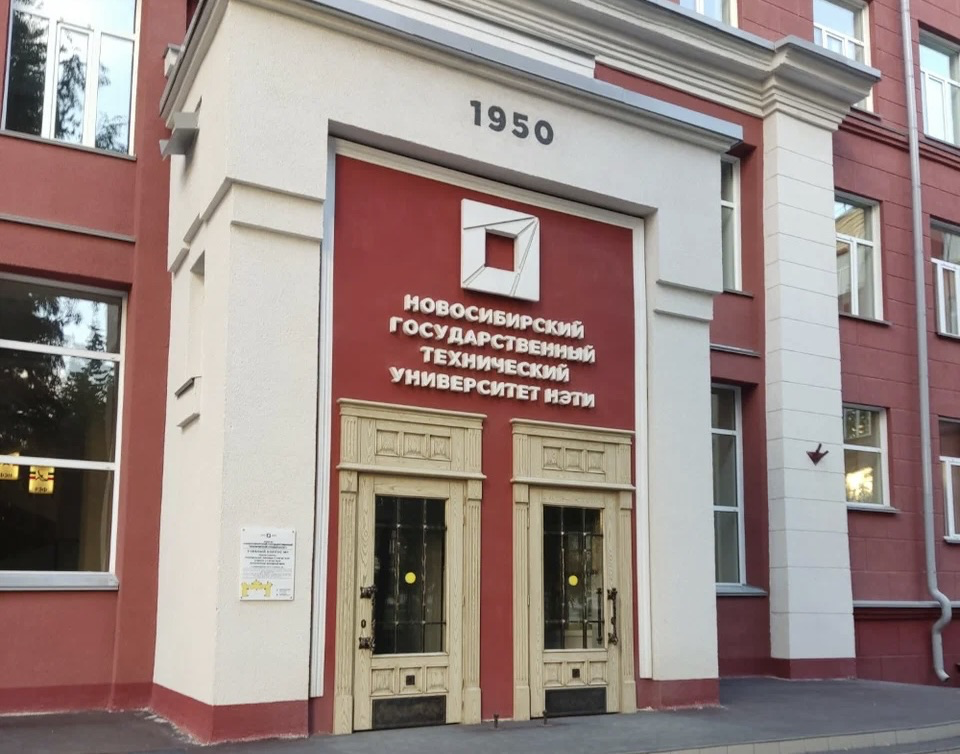
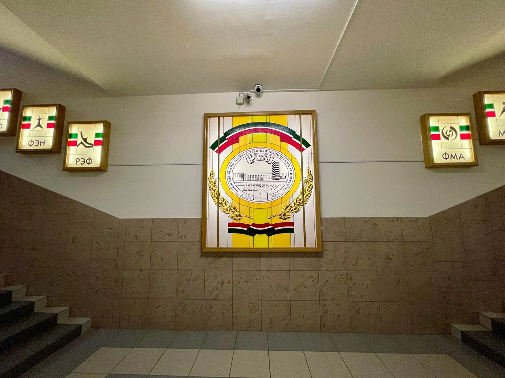
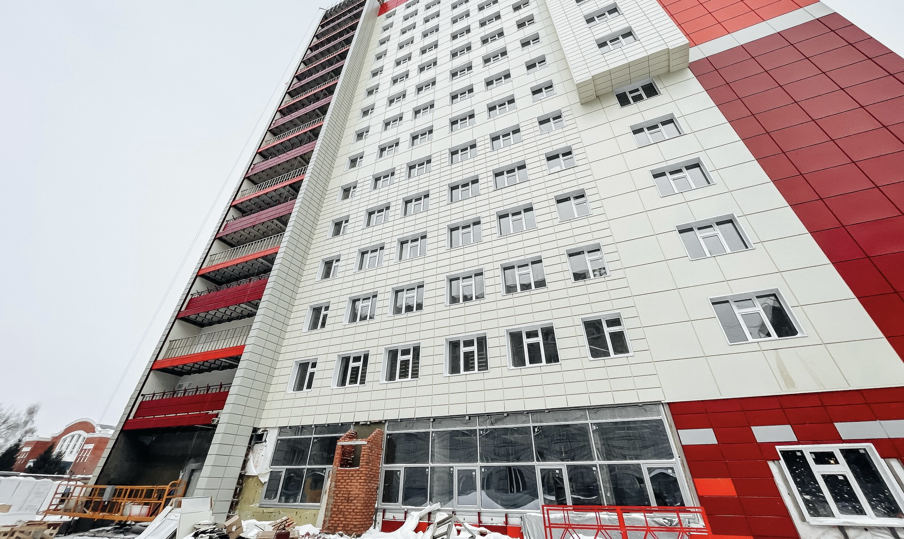
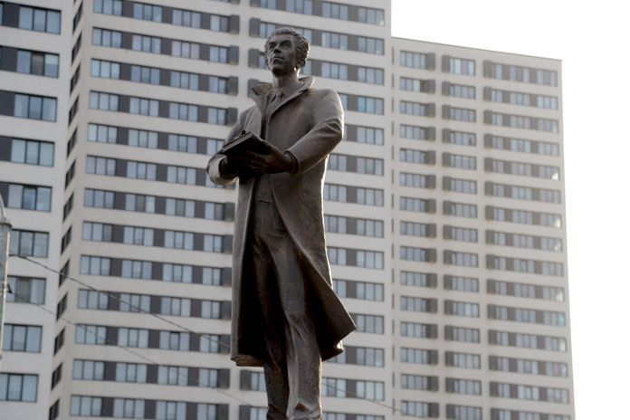

Инженерное сердце Сибири
Описание: Прогулка по кампусу НГТУ НЭТИ - от памятной легенды к будущим технологиям
Протяженность: 2,6 км
Количество лестниц: 0
Особенности:
- Наличие пешеходных зон
- Наличие общественных туалетов
Ключевые места

Первый корпус НГТУ
Это старейшее здание университета, ставшее главным учебным корпусом.

Прогулка по корпусу
Центр учебной и организационной жизни НГТУ.

Зеленые аллеи кампуса
Зеленый парк и мемориальные зоны, с информацией об участниках Великой Отечественной войны.

Общежития НГТУ
Современные блоки с уютными комнатами, где есть всё необходимое для учебы и отдыха.

Седьмой корпус НГТУ
Это здание - «сердце» информационных технологий вуза. Здесь располагается факультет автоматики и вычислительной техники (АВТФ).

Памятник первому ректору НГТУ
Памятник выдающемуся ученому и первому ректору НГТУ НЭТИ Георгию Павловичу Лыщинскому.